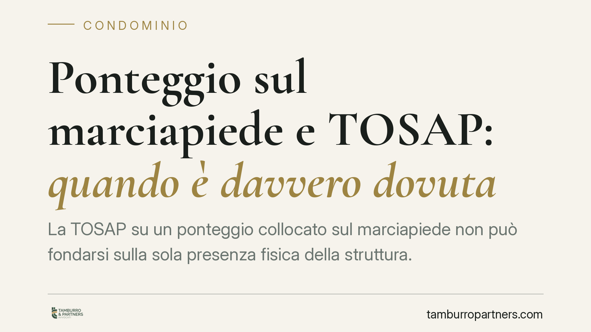

Ponteggio sul marciapiede e TOSAP: quando è davvero dovuta
La TOSAP su un ponteggio collocato sul marciapiede non può fondarsi sulla sola presenza fisica della struttura. Secondo l'orientamento della Cassazione, occorre verificare se e quanto l'occupazione sottragga concretamente il suolo all'uso pubblico. Una distinzione che incide sulla legittimità degli avvisi notificati a condomini e imprese durante i lavori di manutenzione delle facciate.

Il caso
Durante i lavori sulle facciate è prassi montare ponteggi che insistono, in tutto o in parte, sul marciapiede. Il Comune, in questi casi, richiede la TOSAP: la tassa per l'occupazione di spazi ed aree pubbliche. La domanda ricorrente è se tale prelievo sia dovuto per il solo fatto che la struttura poggi sul suolo comunale, oppure se occorra qualcosa di più.
La risposta della giurisprudenza di legittimità è netta: non basta il contatto materiale tra ponteggio e suolo. Occorre valutare l'incidenza concreta dell'occupazione sull'uso pubblico dell'area.
Inquadramento normativo
La TOSAP trova disciplina nel D.Lgs. 507/1993 (artt. 38 e seguenti). Il presupposto impositivo è l'occupazione di spazi e aree appartenenti al demanio o al patrimonio indisponibile dei Comuni e delle Province.
Il punto decisivo è la nozione di "occupazione". La Cassazione ha chiarito che essa non coincide con la mera presenza fisica di un manufatto sul suolo pubblico, ma con la sottrazione, anche parziale, di quel suolo alla sua naturale destinazione, cioè all'uso generale della collettività. In altri termini: la tassa colpisce la riduzione della fruibilità pubblica dell'area, non il semplice appoggio di una struttura.
Ne discende che l'ente impositore deve motivare l'avviso indicando come e in che misura il ponteggio abbia effettivamente limitato il transito o l'uso del marciapiede. Un'imposizione basata sulla sola esistenza della struttura, senza questa verifica, è esposta a censura.
Le tre situazioni tipiche
La distinzione pratica ruota attorno all'effetto del ponteggio sul passaggio pedonale.
- Ponteggio che occlude il marciapiede. Il transito pedonale è impedito o deviato. Qui la sottrazione all'uso pubblico è piena e la TOSAP è, di regola, dovuta sull'intera superficie interessata.
- Ponteggio con passaggio pedonale protetto. La struttura è attrezzata per consentire il transito sotto il ponteggio (tunnel pedonale). In questo caso l'area, pur fisicamente occupata dagli elementi strutturali, resta in larga parte fruibile: l'incidenza concreta sull'uso pubblico è inferiore e va misurata.
- Occupazioni puntuali degli appoggi. Quando solo i piedi del ponteggio toccano il suolo e il marciapiede resta percorribile, l'occupazione tassabile si riduce agli ingombri effettivi, non all'intera proiezione della struttura.
La differenza non è teorica: incide direttamente sulla superficie imponibile e, quindi, sull'importo richiesto.
Implicazioni pratiche per condomini e imprese
Il committente dei lavori — spesso il condominio — e l'impresa esecutrice sono i destinatari tipici della pretesa. Prima di pagare è opportuno non dare per scontata la legittimità dell'atto.
Occorre anzitutto distinguere la natura dell'atto ricevuto. L'avviso di accertamento è un provvedimento impositivo autonomamente impugnabile davanti alla Corte di giustizia tributaria di primo grado, di norma entro 60 giorni dalla notifica. La mera richiesta di pagamento o la liquidazione su dichiarazione seguono un regime diverso: in questi casi va individuato con precisione l'atto impugnabile e il relativo termine, perché un errore sull'oggetto dell'impugnazione può pregiudicarne l'ammissibilità.
Il secondo profilo è la superficie contestata. Se l'avviso applica la tassa all'intera proiezione del ponteggio ignorando il passaggio pedonale protetto, vi è margine per ridurre l'imponibile alla sola porzione effettivamente sottratta all'uso pubblico.
Cosa fare in concreto
- Qualificare l'atto. Verificare se si tratta di avviso di accertamento (impugnabile entro 60 giorni) o di richiesta di pagamento, individuando l'atto effettivamente contestabile e il termine applicabile.
- Leggere la motivazione. Controllare che l'avviso indichi non solo la presenza del ponteggio, ma l'effettiva incidenza sull'uso pubblico del suolo.
- Misurare il passaggio residuo. Rilevare la larghezza del marciapiede lasciata libera e la presenza di tunnel pedonale, per contestare la base imponibile sovrastimata.
- Conservare la documentazione di cantiere. Autorizzazione all'occupazione, planimetrie, date di montaggio e smontaggio, fotografie: servono a provare durata e ingombro reale dell'occupazione.
- Valutare la tempestività. Se emergono profili di illegittimità, attivarsi entro i termini per non precludere la difesa.
Contributo informativo a cura di Tamburro & Partners Avvocati - Avv. Giuseppe Tamburro. Non costituisce parere legale.
Ogni condominio ha una storia a sé.
Se gestisci un'amministrazione e vuoi un confronto su una specifica questione condominiale, scrivi allo studio. Ti rispondiamo entro un giorno lavorativo.